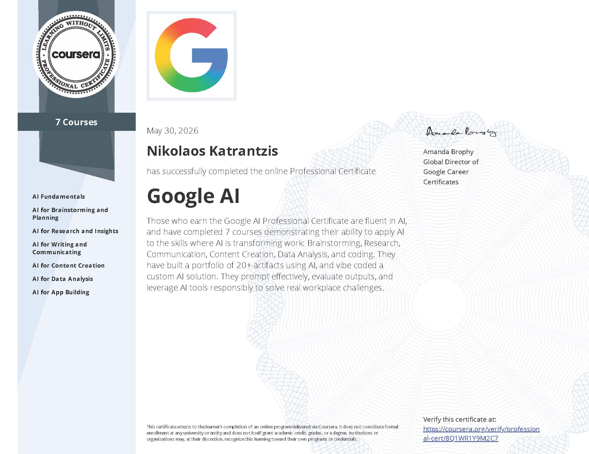
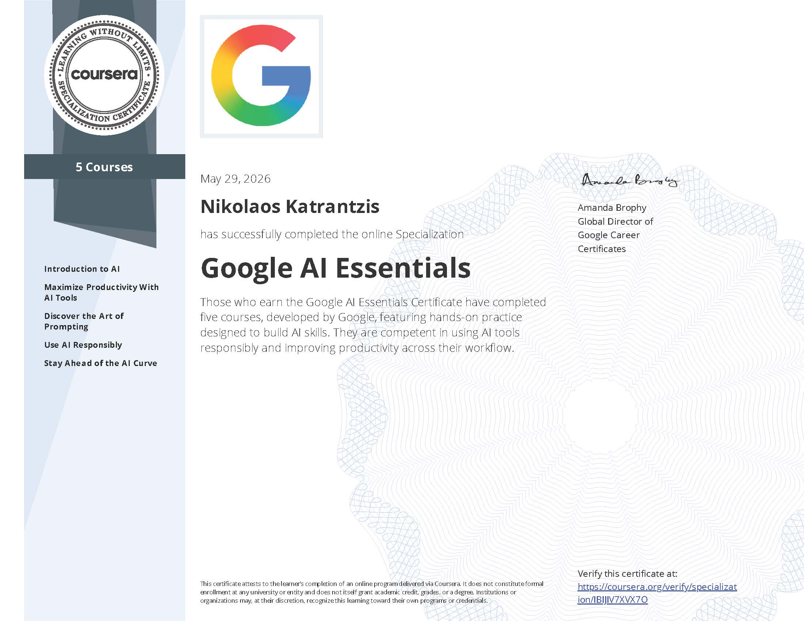
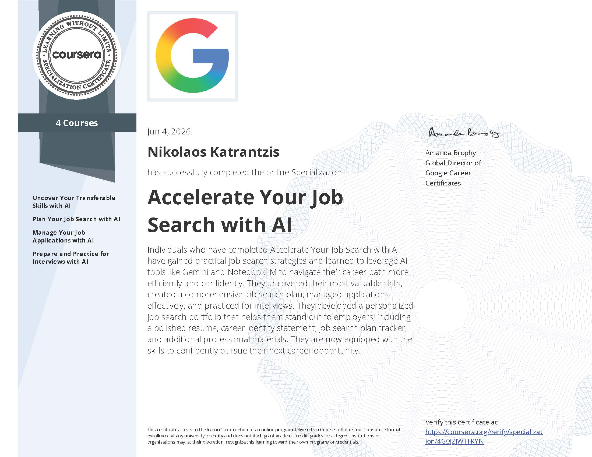

Organisation
Aufgaben klar ordnen.
Organisieren mit Hilfe von Technologie interessiert mich, weil ich Aufgaben gerne teamorientiert und unkompliziert strukturiere.
Profil
Aufgaben klar ordnen.
Neues schnell aufnehmen.
Modern und praktisch arbeiten.
Skills
Ein ruhiger Mix aus Analyse, Organisation, Kommunikation und praktischer Arbeit im Alltag.
Zertifikate
Aus dem Hause Google aus Eigeninteresse erworbene Qualifikationen.



Kontakt